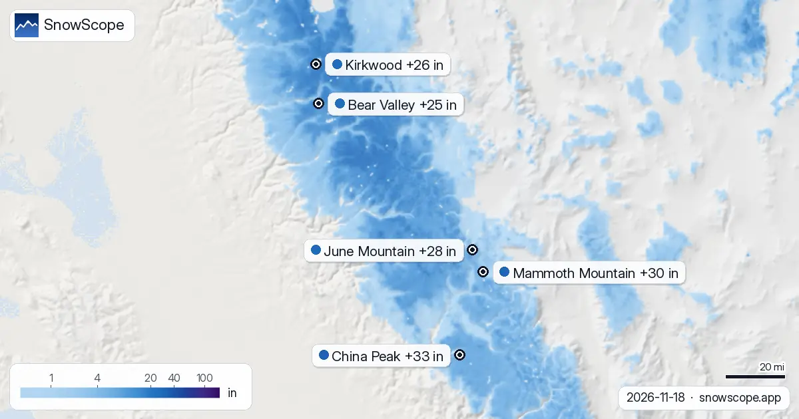

US West snow forecast: China Peak +33 in by 21 November
Heavy snow is coming to the Sierra and Rockies between 19 and 21 November. China Peak leads the forecast with 33 in (83 cm) on its upper slopes, but the biggest gain happens on Thursday 19 November alone. Snow will climb to higher elevations as the system moves through.
See the live snow forecast for China Peak in the SnowScope appSnow depth, powder alerts and the 3D map, free.
Which day brings the most snow
Thursday 19 November is the peak day across the region. China Peak will see 27 in (69 cm) fall on that single day, with another 6 in (14 cm) on Friday 20 November. Mammoth Mountain follows a similar pattern: 26 in (67 cm) on Thursday, then 4 in (10 cm) on Friday.
June Mountain shows the same rhythm: 24 in (60 cm) on Thursday, 4 in (10 cm) on Friday. By contrast, today (Wednesday 18 November) has brought only small amounts—1 to 2 in (3 to 6 cm)—across these mountains. The timing matters: plan your travel around Thursday's heavy snow.
| Resort | Snow depth | New snow, 72 h | Coming, next days | Top |
|---|---|---|---|---|
| China Peak | 8 in (21 cm) | 6 in (16 cm) | 33 in (83 cm) | 8,629 ft (2,630 m) |
| Mammoth Mountain | 11 in (27 cm) | 5 in (12 cm) | 30 in (77 cm) | 11,024 ft (3,360 m) |
| June Mountain | 11 in (28 cm) | 6 in (14 cm) | 28 in (70 cm) | 10,135 ft (3,089 m) |
| Kirkwood | 26 in (66 cm) | 14 in (36 cm) | 26 in (66 cm) | 9,462 ft (2,884 m) |
| Bear Valley | 26 in (65 cm) | 14 in (36 cm) | 25 in (64 cm) | 8,484 ft (2,586 m) |

Snow depth now and what to expect higher up
Kirkwood holds the deepest snow on the ground right now: 26 in (66 cm) on its upper slopes, measured or estimated as of 18 November. Bear Valley stands at 26 in (65 cm), China Peak at 8 in (21 cm), and Mammoth Mountain at 11 in (27 cm). These are the upper-slope figures; base elevations have far less.
Height matters more than you might think. At China Peak, the base sits at 7,031 ft (2,143 m) with only 5 in (13 cm) down there today, but the mid-mountain at 7,828 ft (2,386 m) holds 7 in (19 cm). The summit at 8,629 ft (2,630 m) has 8 in (20 cm). After Thursday's snow, all three heights will carry significantly more, with the top gaining up to 43 in (108 cm) over the next week.
How this week compares with November history
China Peak today sits at 6 in (16 cm) at mid-elevation—well above the normal 2 in (5 cm) for 18 November. That depth rank higher than 32 of the past 46 Novembers on the same date. Early-season snow is thin everywhere, but China Peak is running ahead of its own history.
The incoming system will close that gap fast.
Rain-snow line and what that means for your run choice
On Wednesday 18 November, the freezing level (where rain turns to snow) varies by mountain. At China Peak it ranges from 4,593 ft (1,400 m) to 8,071 ft (2,460 m)—so the base gets wet snow, the summit gets dry powder. Mammoth Mountain sees the freezing level hold lower, between 4,593 ft (1,400 m) and 7,579 ft (2,310 m), all snow.
By Thursday 19 November, the freezing level drops sharply. At China Peak it falls to 3,970 ft (1,210 m) to 6,692 ft (2,040 m). Friday 20 November is the coldest day: freezing levels plunge to as low as 1,840 ft (560 m) at China Peak, turning the entire mountain to dry snow. That cold air is part of what makes Thursday and Friday so good.
Snow cover across the region
The US West had snow on the ground at 168 of 193 resorts as of 18 November, covering 281,920 sq mi (730,170 km²). By 21 November, that snow-covered area is forecast to grow to 347,843 sq mi (900,910 km²), with 179 resorts holding snow. The incoming system expands the ski-able terrain significantly.
Kirkwood and Bear Valley, already well-stocked on the Sierra crest, will gain another 25 to 26 in (64 to 66 cm) of additional snow by Friday. These two resorts are your safest bet if you want to be sure of deep snow by mid-next week.
Uncertainty and what to watch
Forecasts this far out shift as the system approaches. The timing of Thursday's heaviest snow is fairly stable, but exact totals by resort can still move. Friday amounts are less certain. Check the snow map again on Tuesday 17 November to see how the forecast has evolved.
Early-season snow often sits on thin base. Rock and dirt can hide under shallow coverage, especially at lower elevations. Kirkwood and Bear Valley are safer bets than lower-elevation mountains on the same day.
Tips for skiers
- Thursday 19 November is your window: plan to ski that day if you can. The heaviest snow arrives on Thursday and Friday, with Friday showing the coldest and driest conditions.
- Head high: upper slopes will have more snow than base elevations on the same mountain. At China Peak, choose runs above 7,828 ft (2,386 m) to stay in deep powder longer.
- Kirkwood and Bear Valley are already deep and will stay deep after this system. If you want guaranteed snow depth by next weekend, these two are the safest choice.
- Rain-snow line drops Friday, so the entire mountain turns to dry snow by then. Friday afternoon may be your best window for powder that skis like powder, not like corn.
- Forecasts can shift. Look at SnowScope again on 17 November before you book a hotel or book time off work.
About these numbers
Resort snow depths are the deepest snow on the resort's upper slopes on the date shown; they are estimates for an area, not a measurement at one point. Forecasts can change. Always read the official avalanche bulletin before going off-piste.
Official avalanche bulletins: avalanche.org (US national portal)
Cite this report
For research, teaching or the press: the numbers and charts are free to reuse under CC BY 4.0 with this citation.
SnowScope (2026), US West snow forecast: China Peak +33 in by 21 November, https://snowscope.app/blog/en/2026/11/us-west-china-peak-snow-forecast-18-november-2026.html, accessed 2026-11-18
SnowScope (Atlas Labs). (2026, November 18). US West snow forecast: China Peak +33 in by 21 November. SnowScope snow reports. https://snowscope.app/blog/en/2026/11/us-west-china-peak-snow-forecast-18-november-2026.html
BibTeX
@misc{snowscope2026uswestchinapeaksnowforec,
author = {{SnowScope (Atlas Labs)}},
title = {US West snow forecast: China Peak +33 in by 21 November},
year = {2026},
month = nov,
howpublished = {\url{https://snowscope.app/blog/en/2026/11/us-west-china-peak-snow-forecast-18-november-2026.html}},
note = {Published 2026-11-18 19:19 UTC; accessed 2026-11-18}
}· CC BY 4.0 · Methods, data and tools →
China Peak: snow and temperature by height, this winter vs last (tools) →
Follow China Peak
Free: a message when fresh snow is coming, and the forecast every morning.
More snow reports

Kirkwood leads the US West with 109 cm on upper slopes as of 21 November. Early-season snow depth guide for skiers.

Kirkwood snow outlook: in line for 16 in by 15 November (US West). The next few days look decidedly unsettled in the US West, with the heaviest snow …

Heavenly, Sierra-at-Tahoe and Mt. Rose have more snow on 19 November than in any winter since 1980-81. How much fell, the measured gauges, the weather behind it and the best days to go.